Audio input
File audio dibaca sebagai data sampel dan dipisahkan menjadi channel kiri dan kanan.
> HOW THE DECODER WORKS
The Golden Record images are encoded as two-channel audio. The decoder reads the signal, reconstructs scan lines, and displays the resulting image.
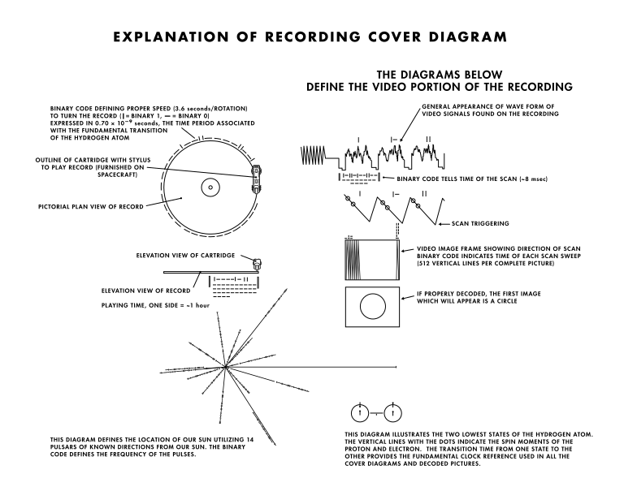
Diagram PNG referensi proses pengolahan sinyal menjadi gambar.
File audio dibaca sebagai data sampel dan dipisahkan menjadi channel kiri dan kanan.
Amplitudo sinyal dipetakan menjadi baris gambar. Setiap baris disusun berurutan untuk membentuk frame.
Posisi gambar mengikuti waktu audio, sehingga perubahan frame tetap sinkron ketika diputar.
Oscilloscope menampilkan bentuk sinyal
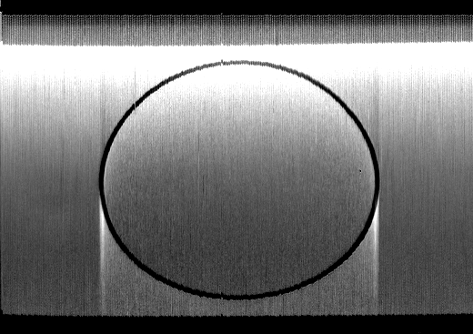
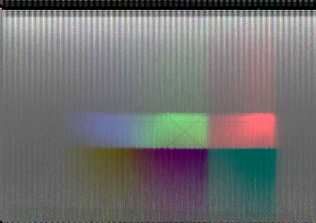
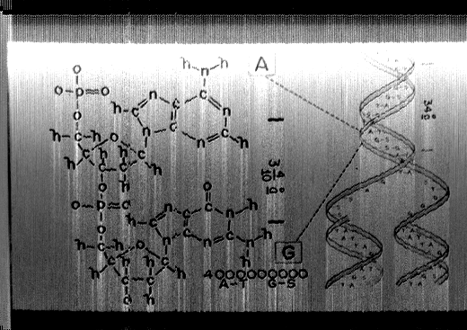
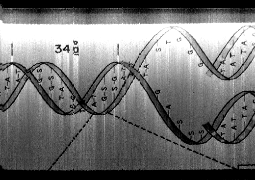
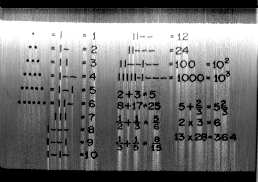
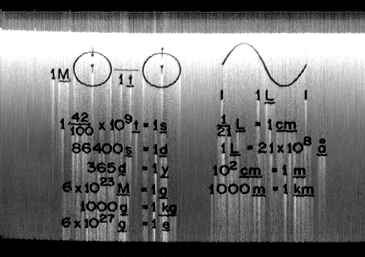
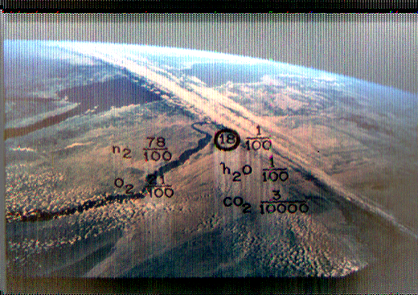
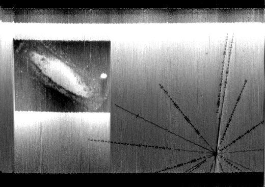
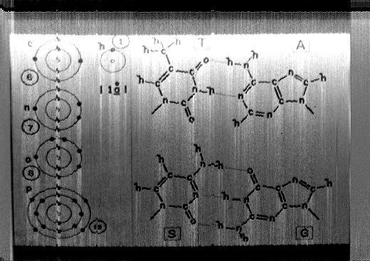
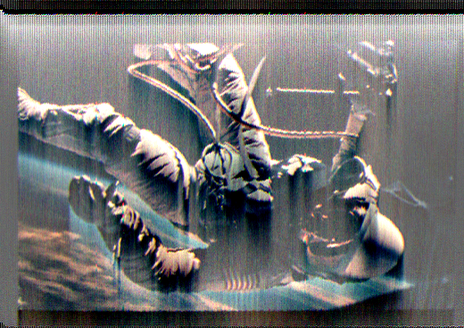